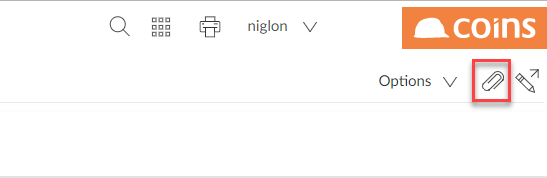
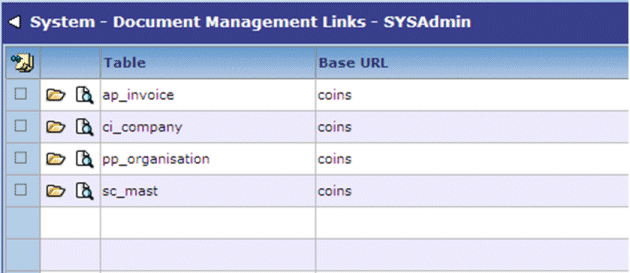
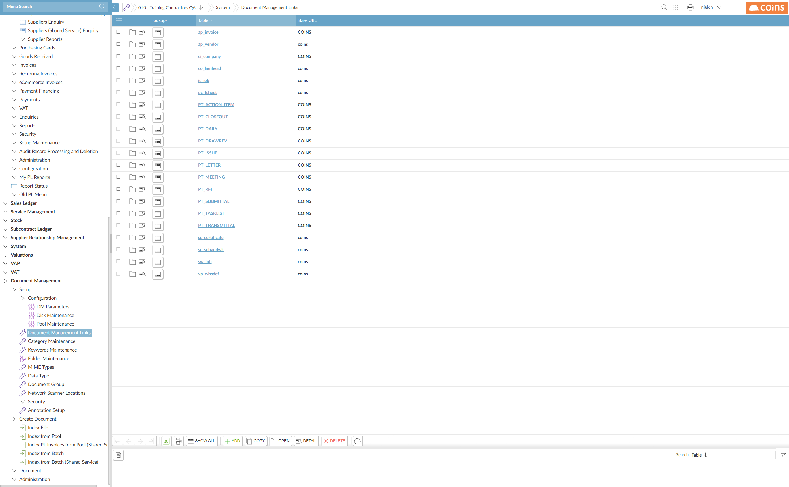
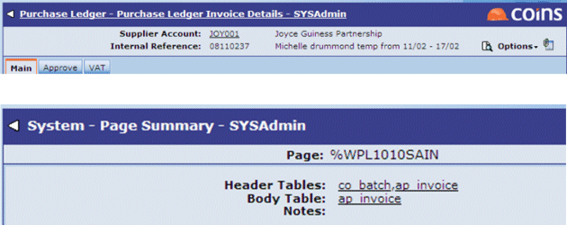
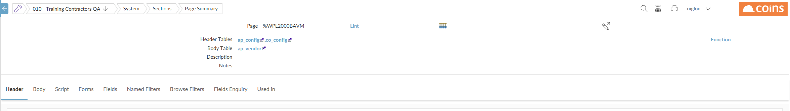

To allow users to attach documents to a

Set up the tables you wish to attach documents to:


NOTE
To identify the base table name, click on the page header title, such as
To identify the base table name, navigate to the page required, such as


Create a Unix directory as the base directory for documents that have been attached; for example, "attached" under ../var/data. Ensure this directory has full rwx permissions - chmod 777 attached. Use Disk Maintenance to specify the path to this directory.
Ensure that the upload script and directory are set correctly: see File Uploads.